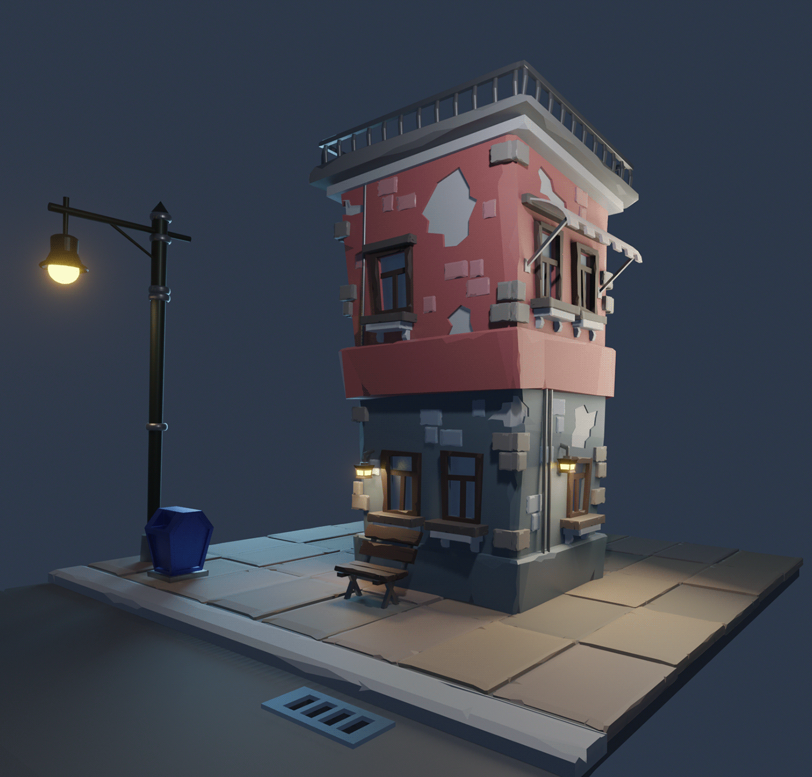
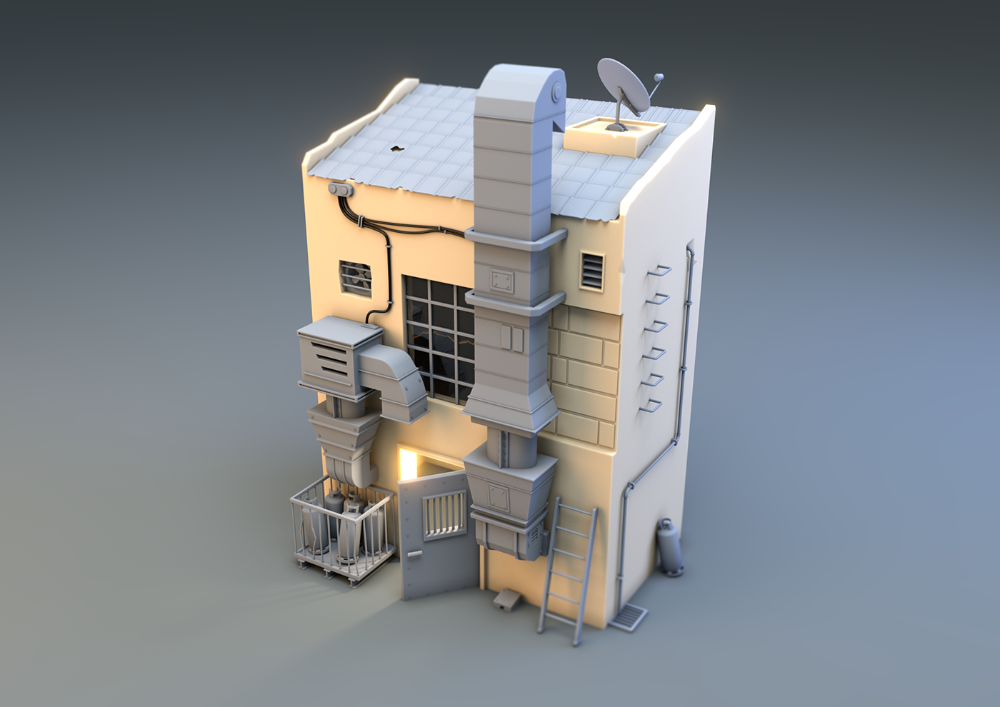
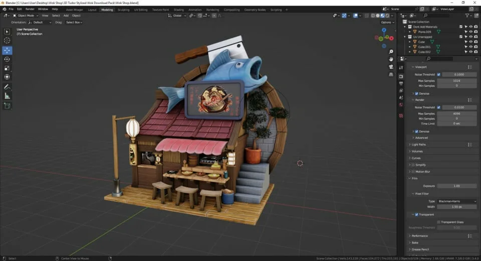
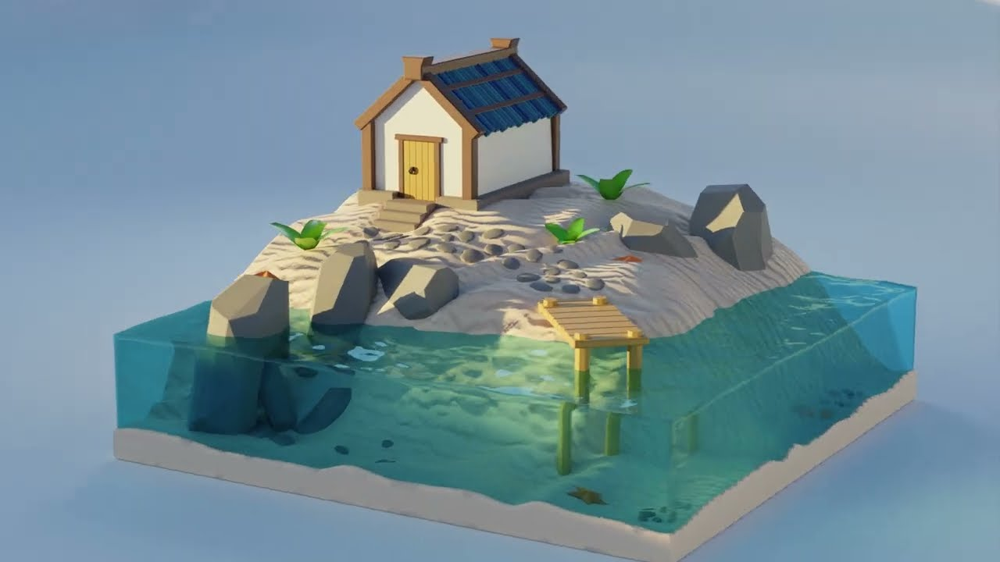
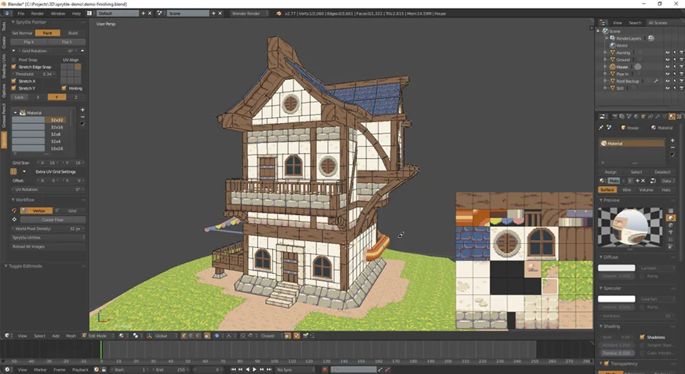

Что делает 3D таким захватывающим?
3D-художество позволяет создавать объекты, которые можно рассмотреть со всех сторон, оживлять фантазию и переносить её в игры, фильмы и виртуальную реальность.
История 3D моделирования
3D моделирование — это процесс создания цифровых трехмерных объектов с помощью компьютеров, который эволюционировал от простых геометрических форм до сложных виртуальных миров. Вот краткий обзор его развития.
Ранние годы (1960-е — 1970-е)
- Начало: Первые шаги в 3D моделировании связаны с компьютерной графикой. В 1963 году Иван Сазерленд разработал Sketchpad — одну из первых систем интерактивного черчения, которая позволяла создавать простые 2D и ранние 3D формы.
- CAD-системы: В 1960-х появились первые системы автоматизированного проектирования (CAD), такие как DAC-1 от General Motors. Они использовались для инженерных чертежей, но без полноценного 3D рендеринга.
- Первые 3D модели: В 1970-х компьютерная графика развивалась в исследовательских лабораториях. Программа Euclid от IBM (1973) позволяла создавать простые 3D модели для архитектуры и машиностроения.
Развитие компьютерной графики (1980-е — 1990-е)
- Рендеринг и анимация: В 1980-х появились программы вроде AutoCAD (1982), которые сделали 3D моделирование доступным для инженеров. В 1984 году Pixar выпустила первый коммерческий рендерер — RenderMan.
- Фильмы и игры: 3D моделирование взлетело с фильмами. В 1993 году вышел "Парк Юрского периода" с динозаврами, созданными в Softimage. Игры вроде Doom (1993) использовали простые 3D модели, а Quake (1996) ввел полигональную графику.
- Программное обеспечение: Появились специализированные инструменты: 3D Studio (1988, позже Max), Maya (1998 от Alias Wavefront), LightWave (1989). Они позволяли создавать сложные модели, текстуры и анимации.
Современная эра (2000-е — настоящее время)
- Открытый софт: В 2002 году вышел Blender — бесплатный 3D-редактор, который стал популярным благодаря сообществу. Он конкурирует с коммерческими программами вроде Autodesk Maya и 3ds Max.
- Интеграция с технологиями: 3D моделирование интегрировалось с VR (Oculus Rift, 2012), AR и печатью (3D-принтеры с 2000-х). В 2010-х появились облачные сервисы вроде Sketchfab для обмена моделями.
- AI и автоматизация: Современные инструменты, такие как Adobe Substance 3D или Unreal Engine, используют ИИ для генерации текстур и моделей. Проекты вроде Stable Diffusion позволяют создавать 3D из текста.
- Применение: Сегодня 3D моделирование используется в кино (Avatar, 2009), играх (Fortnite), медицине (протезирование), архитектуре и даже метавселенных (Second Life, 2003; Roblox).
3D моделирование прошло путь от нишевых инструментов до повседневной технологии, формируя цифровой мир.
Свобода творчества
В 3D нет границ: можно моделировать персонажей, архитектуру, сцены и необычные миры, которые невозможно создать в реальности, Blender позволяет воплощать самые смелые, и инога даже мемные идеи в жизнь!
Реалистичность
Текстуры, свет и материалы помогают добиться впечатляющего реализма, передавая атмосферу, материалы и настроение. С помощью PBR-материалов и Cycles рендера достигается фотореализм.
Интерактивность
3D-модели используются в играх, AR/VR и интерактивных приложениях, где зритель становится участником события. Blender интегрируется с Unity и Unreal Engine.
Технологии будущего
3D-художество тесно связано с технологиями: рендеринг, CGI, анимация, CAD и визуализация делают его востребованным во многих индустриях. Blender — бесплатный инструмент для всех.
Примеры 3D-проектов в Blender
Вот несколько вдохновляющих работ, созданных в Blender. Эти проекты демонстрируют возможности 3D-моделирования, текстурирования и рендеринга.

Пример 3D-моделирования в Blender — детализированная сцена.

Визуализация типичного здания.

Прикольная миниатюрная работа в Blender.

Миниатюрный домик на острове

Одна работа с UV-развёрткой.
Инструменты для 3D-художника
Blender — это мощный бесплатный инструмент, но есть и другие программы, которые помогут в создании 3D-контента.
- Blender: Полнофункциональный 3D-софт для моделирования, скульптинга, анимации и рендеринга.
- Substance Painter: Для создания текстур и материалов с процедурными эффектами.
- ZBrush: Идеален для цифрового скульптинга и создания органических форм.
- Maya: Профессиональный инструмент для анимации и визуальных эффектов в кино.
- Houdini: Для процедурного моделирования и симуляций.
Преимущества карьеры в 3D-художестве
3D-художники востребованы в игровой индустрии, кино, архитектуре и дизайне, это творческая профессия с хорошими перспективами!(самое главное - это научиться противостоять ИИ, не дайте отобрать им ваши деньги)
Высокая зарплата
Опытные 3D-художники могут зарабатывать от 100 000 рублей в месяц и выше (вставить мем с котом и деньгами)
Удаленная работа
Многие проекты позволяют работать из любой точки мира с интернетом, рай для интроверта!
Творческая свобода
Каждый проект уникален, и вы можете выражать свою фантазию без ограничений!
Непрерывное обучение
Индустрия развивается быстро, так что всегда есть что изучать новое!
Почему это важно?
3D-художество помогает передавать эмоции, рассказывать истории и создавать впечатления, которые остаются в памяти дольше любого плоского изображения. В эпоху цифровых технологий 3D становится неотъемлемой частью нашего мира.
Если вы интересуетесь дизайном, технологиями или просто хотите создать что-то удивительное, начните с Blender — это бесплатно и доступно каждому! (однако я не буду виноват если это будет выглядеть как панель управления самолёта)
УМОЛЯЮ МШП ПРОДЛИТЕ КУРС БЛЕНДЕРА🙏🙏